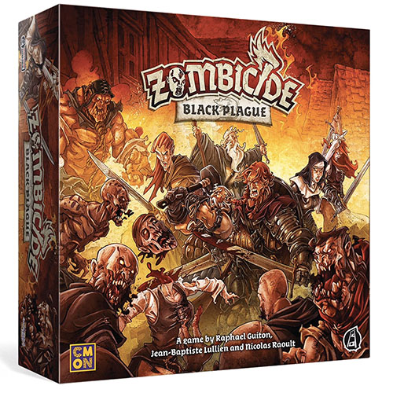

Ameritrash games, often referred to as "thematic games", are all about immersing players in rich narratives and thrilling adventures. These games typically feature deep storytelling, dramatic conflicts, and impressive components like miniatures and detailed game boards. With luck-based mechanics such as dice rolls or card draws, each game unfolds unpredictably, keeping players on the edge of their seats. Ameritrash games encourage direct player interaction, often through combat or alliances, making them perfect for those who love cinematic experiences and high-stakes gameplay. Whether you're exploring mysterious worlds, surviving a zombie apocalypse, or conquering galaxies, Ameritrash games transform your tabletop into an epic adventure.
Game Examples:
- Zombicide
- Arkham Horror
- Twilight Imperium
Key Features:
- Strong narrative-driven gameplay.
- Elaborate components like miniatures and detailed boards.
- Luck-based mechanics like dice rolls or card draws.